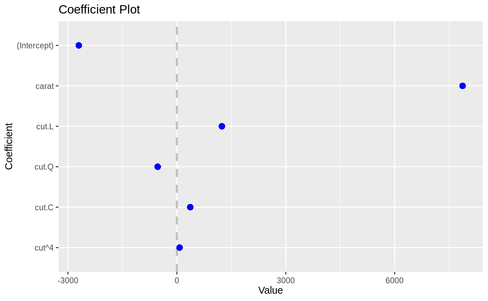
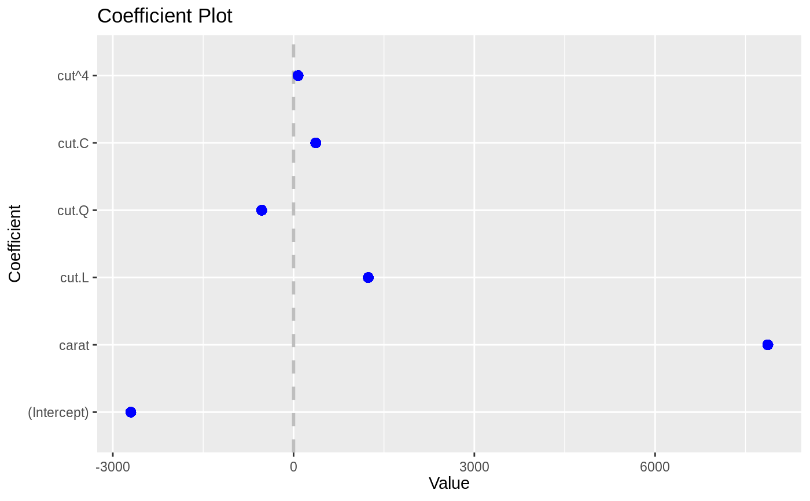

buildPlotting.default.RdBuild ggplot object for coefplot
buildPlotting.default(modelCI, title = "Coefficient Plot", xlab = "Value", ylab = "Coefficient", lwdInner = 1, lwdOuter = 0, pointSize = 3, color = "blue", cex = 0.8, textAngle = 0, numberAngle = 0, shape = 16, linetype = 1, outerCI = 2, innerCI = 1, multi = FALSE, zeroColor = "grey", zeroLWD = 1, zeroType = 2, numeric = FALSE, fillColor = "grey", alpha = 1/2, horizontal = FALSE, facet = FALSE, scales = "free", value = "Value", coefficient = "Coefficient", errorHeight = 0, dodgeHeight = 1)
| modelCI | An object created by |
|---|---|
| title | The name of the plot, if NULL then no name is given |
| xlab | The x label |
| ylab | The y label |
| lwdInner | The thickness of the inner confidence interval |
| lwdOuter | The thickness of the outer confidence interval |
| pointSize | Size of coefficient point |
| color | The color of the points and lines |
| cex | The text size multiplier, currently not used |
| textAngle | The angle for the coefficient labels, 0 is horizontal |
| numberAngle | The angle for the value labels, 0 is horizontal |
| shape | The shape of the points |
| linetype | The linetype of the error bars |
| outerCI | How wide the outer confidence interval should be, normally 2 standard deviations. If 0, then there will be no outer confidence interval. |
| innerCI | How wide the inner confidence interval should be, normally 1 standard deviation. If 0, then there will be no inner confidence interval. |
| multi | logical; If this is for |
| zeroColor | The color of the line indicating 0 |
| zeroLWD | The thickness of the 0 line |
| zeroType | The type of 0 line, 0 will mean no line |
| numeric | logical; If true and factors has exactly one value, then it is displayed in a horizontal graph with continuous confidence bounds. |
| fillColor | The color of the confidence bounds for a numeric factor |
| alpha | The transparency level of the numeric factor's confidence bound |
| horizontal | logical; If the plot should be displayed horizontally |
| facet | logical; If the coefficients should be faceted by the variables, numeric coefficients (including the intercept) will be one facet |
| scales | The way the axes should be treated in a faceted plot. Can be c("fixed", "free", "free_x", "free_y") |
| value | Name of variable for value metric |
| coefficient | Name of variable for coefficient names |
| errorHeight | Height of error bars |
| dodgeHeight | Amount of vertical dodging |
a ggplot graph object
This function builds up the ggplot layer by layer for coefplot.lm
coefplot.default coefplot multiplot
data(diamonds) model1 <- lm(price ~ carat + cut, data=diamonds) theCI <- coefplot:::buildModelCI(model1) coefplot:::buildPlotting.default(theCI)coefplot(model1)